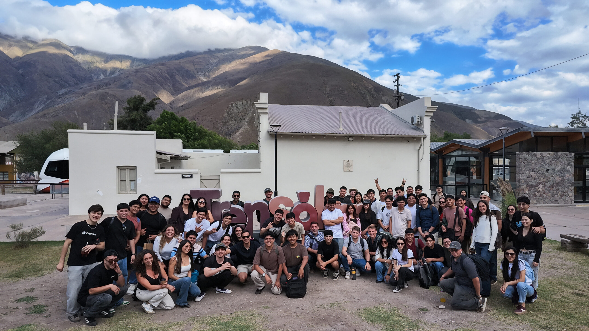
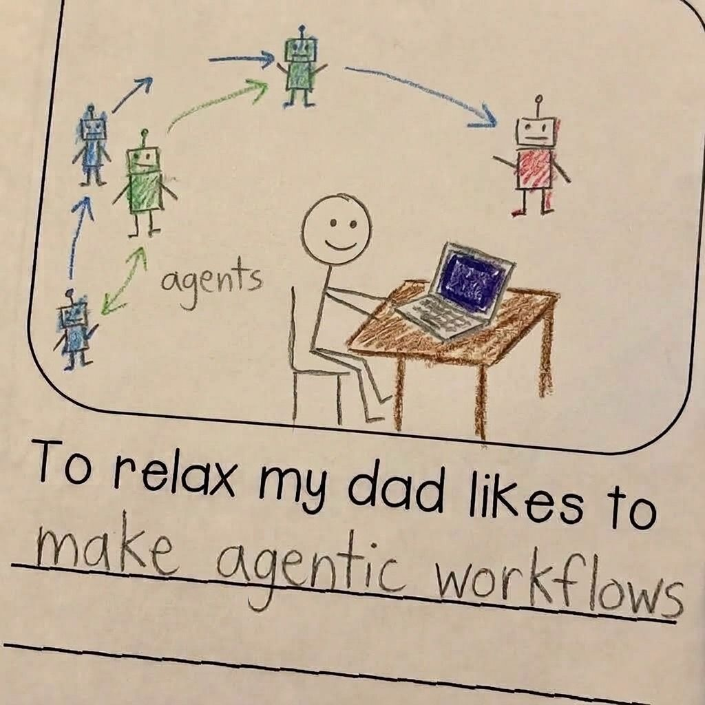
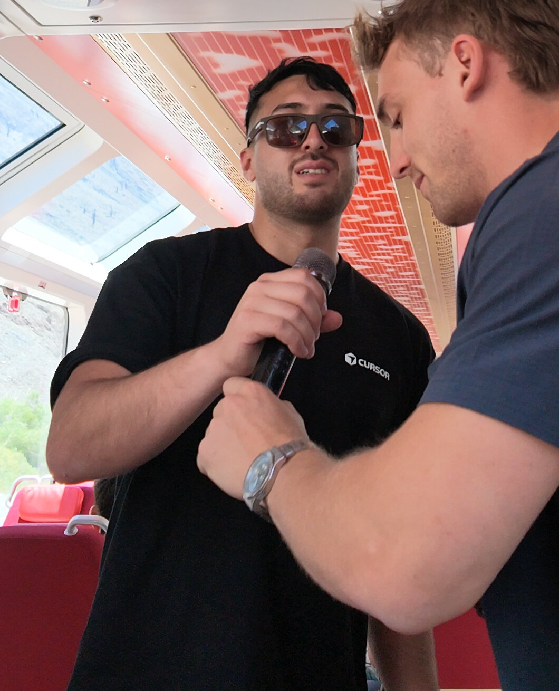
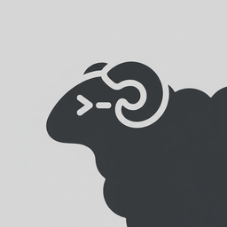

De Stack Overflow a un equipo de agentes
Evolución de la programación
en la era de la IA
Franco Durán · founder de jujuy.dev

Hace unos meses…
Mi vida
cambió
Nada de esto hubiese sido posible sin los modelos de IA y la orquestación de agentes.
Quién soy

Franco Durán
- 01Builder Ambassador · SpaceX AI Community
- 02Team leader en consultorías de automatización de procesos y desarrollo de software para bancos comerciales
- 03Founder de jujuy.dev

Al otro día
“Franco, tenés razón:
estamos trabajando mal”

El team leader llegó con Herd y nos cambió la forma de trabajar.

Lo que hacemos en Jujuy
Hackatón Cursor × jujuy.dev · con Argentina Space
Una hackatón
arriba de un tren
A bordo del Tren Solar de la Quebrada.
Podio
- 1°chambeAREmpleo
- 2°HananMapa y exploración
- 3°JujuRecomendador de viaje
22/11domingo
12 horasde 8:30 a 20:30
Volcán → TilcaraDemo Day al llegar

En menos de 3 meses
365personas
pasaron por nuestros eventos. Y no para de crecer.
3/9 · Meetup #1 · ~51 personasHoy · 365 en 8 eventos
Bienvenidos al FOMO
Cada semana sale algo que cambia cómo se programa.
Hoy una persona con agentes hace lo que antes hacía un equipo.
Los que arrancan hoy llevan ventaja.
El que no prueba, no se entera.

Esto recién
empieza.
Franco Duránjujuy.dev
Sumate a la comunidad
Webjujuy.dev.ar
Instagram@jujuy.dev
X@fdurandev